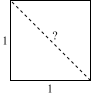

Week 1
Outline
This week, we start with a careful treatment of mathematical concepts you have learnt about in high school. Specifically, we begin the by discussing numbers. What are integers, real numbers, and so on? And what are variables in mathematics, and why are they useful? With those concepts in place, we can talk about algebra: expressions involving numbers, variables, and operators, such as addition and multiplication, and exponentiation. How to evaluate and simplify such expression?
Next, we can look at equalities and inequalities: if two expressions are equal, then what can we learn about the underlying variables? Specifically, we consider solving linear and quadratic equations. And what if one expression is know to be larger than the other? What can we learn, in that case, about certain variables?
Finally, we consider set theory and indices, and use that to formulate so-called aggregation operators, such as the summation and product operator. Using these operators, we discuss descriptive statistics (such as sample mean and variance), while paying attention to how one should format these.
1. Numbers
Mathematics as a world of ideas
Much of mathematics considers idealised objects and their properties (e.g., the perfect circle, with radius \(r\), for which the area is given by \(A=\pi r^2\)). These idealised objects often do not exist in the real world. Yet, both the origins as well as the applications of many notions in mathematics, in the end, lie in the real world. But how can an idealised concept be relevant in the real world, given that the real world is never perfect?
The reason for this is quite simple: many everyday phenomena and objects can be approximated really well by idealised objects, of which we know the properties.
Whole numbers
Counts
One of the simplest idealised objects in mathematics is a whole number, resulting from a count. The concept of whole numbers and being able to reason about them has a long history: even in our early stages as hunter-gatherers, it was extremely useful (in fact, critical to our survival) to be able to count, for instance, how many apples your tribe had collected, how many your tribe ate each day, and, hence, when the current stock would be depleted. Perhaps somewhat unsurprisingly, many animals seem to have a rudimentary understanding of numbers:
Such whole numbers are often referred to as natural numbers. The complete set of natural numbers, starting at zero, and increasing by one at a time, without end, is sometimes denoted by \(\mathbb{N}\). That is, \(\mathbb{N}\) consists of the numbers \(0,1,2,3,\ldots\), where the dots signify that the numbers just keep on increasing.
So what’s idealised about natural numbers? Considering the case of counting apples, what if a fellow hunter-gatherer had so much appetite that she took a bit out of one the apples that you collected. Is that still an apple? To some degree: it depends… Was it a big bite? Or only a really small bite? And how about small vs. big apples? Perhaps five big apples provide more nutrition than six small apples. Clearly, the number one has relies on some idealised notion of what counts as a real apple and what does not. To make matters worse, some things are rather hard to count in a discrete fashion (e.g., the time from sunrise until sunset).
Yet, despite the fact that natural numbers can be thought of as counts of idealised, discrete units, its practical merits are undeniable. For instance, we can count how many students show up for a tutorial, without there being any ambiguity in that count. That count reflects a real-world fact that we can all, as reasonable beings, agree on.
Counting systems
Decimal counting system
The way in which we count evolved using our fingers. For instance, in many cultures, the number of extended fingers reflects a count which can, thus, range from zero to ten:
To these numbers we have learnt to assign written symbols, such as \(0,1,2,3,4,5,6,7,8,9,10\), where each subsequent symbol means your count has increased by exactly one. However, being able to count only to ten is too limited. Hence, we started combining multiple symbols, as you already see in the number \(10\)—in our so-called base-\(10\) or decimal system, \(9\) is the highest single-digit number. If we add one to that, we simply write down a new digit on the left, which we initialise at \(1\), while the the right digit is reset to \(0\). Hence, we end up with \(10\).
Once we reach \(19\), increasing that number by one means that we have again exhausted our symbols for the last digit. So we increase the left digit by one, and reset the right digit to zero, yielding \(20\). This process can be repeated until we reach \(99\): both digits have reached the largest value.
How to add one to that number? We simply write down yet another digit on the left, and reset all other digits to \(0\). Hence, we get \(100\). This process can be repeated to reach extremely large numbers, with only a limited number of digits. For instance, with just 80 subsequent digits, we could write down how many protons there are in the entire observable universe.
Binary counting system
At a fundamental level, computers, smartphones, and other electronic devices do not have ten fingers to keep track of quantities. Instead, information is stored and manipulated in the form of bits, which can be thought of as on/off-switches, in which we consider ‘on’ as being one unit more than ‘off’.
As a result, the natural counting system for a computer is binary: each digit can be either \(0\) or \(1\), where \(0\) is the smallest digit and \(1\) the largest digit. And if we add one to that largest digit, we simply do so by introducing a new digit on the left, which we initialise at \(1\), while reseting the digit on the right to \(0\), and so on, as shown in Table 1.
| Decimal | Binary |
|---|---|
| 0 | 0 |
| 1 | 1 |
| 2 | 10 |
| 3 | 11 |
| 4 | 100 |
| 5 | 101 |
| 6 | 110 |
| 7 | 111 |
| 8 | 1000 |
| 9 | 1001 |
| 10 | 1010 |
Negative numbers
Since numbers evolved from counting physical objects, it took mathematicians a long time to grasp the concept of negative numbers. After all, you cannot have a negative number of apples. Thus, equations (more on that later) with negative solutions (e.g., \(4x + 20 = 4 \Leftrightarrow x=-4\)) were considered to be absurb by Greek mathematicians. Even as late as the 16th century, negative numbers were, in academic work, sometimes still referred to as absurd numbers.
However, even for simple accounting purposes, such as a decrease in your stock of apples, a debt to a counterparty, and so on, the uses of negative numbers became ever more apparant. Nowadays, negative numbers are recognised as an integral part of everyday calculations.
There are seven important things to remember about negative numbers:
- We denote negative numbers by placing the minus sign (\(-\)) in front of the number. So \(-4\) denotes negative four. Positive numbers, on the other hand, are either denoted by placing the plus sign (\(+\)) in front of it or by not writing down the sign altogether (more common, just like in spoken language; e.g., we typically do not ask for plus four slices of bread). So both \(4\) and \(+4\) denote positive four, where \(4\) is the more common notation.
- Adding up negative \(x\) and positive \(x\), where \(x\) is a number, yields zero: they are opposite numbers that cancel when added up. So \(-x+x=0\).
- The more negative a number is, the lower it is. So, for example, \(-5 < -4\), while on the positive side, \(5 > 4\). In words, we say \(-5\) is less than \(-4\), while \(5\) is greater than \(4\).
- The negative of a negative number is a positive number. That is, \(-(-x)=x\).
- A negative number \(-x\) times another negative number \(-y\) yields a positive number, which is equal to multiplying \(x\) and \(y\). So \(-4\) times \(-3\) yields the same result as \(4\) times \(3\), which is \(12\).
- A negative number \(-x\) times a positive number \(y\) yields a negative result, which is equal to the negative of multiplying \(x\) and \(y\). So \(-4\) times \(3\) equals the negative of \(4\) times \(3\), so \(-12\).
- A negative number \(-x\) can also be thought of as \(x\) multiplied by \(-1\). So simply using (i) all positive numbers, (ii) multiplication, and (iii) only a single negative number, namely \(-1\), we have a way to describe all negative numbers that exist.
Infinity
The introduction of negative numbers is what we call an abstraction: we started with something clearly rooted in our understanding of reality at the time (i.e., counts), and we made the concept a bit more general (i.e., negative numbers), to help us solve more problems, that are still relevant in everyday life (e.g., keeping track of someone’s debt).
Two further abstractions that arose as mathematics matured were the number zero (which effectively says there is nothing to count) and an infinitely large number, denoted by \(\infty\), simply called infinity. Clearly, in our everyday lives infinity does not exist: we live in finite world, with finite resources, finite energy, and so on.
Yet, zero and infinity are extremely useful to calculate certain things: they are an crucial part of calculus (i.e., differentiation and integration), which is all about finding optimal points (e.g., how much crop to grow to maximise profit?), areas and volumes (e.g., what is the volume of a ball with radius \(r\)?), as well as certain expectations (e.g., what is my expected profit, under all kinds of circumstances, that happen with different probabilities?).
Just like any number \(x\) has a negative counterpart \(-x\), so does \(\infty\) have negative counterpart \(-\infty\).
The complete set of all whole numbers, so both negative and positive, ranging from \(-\infty\) to \(\infty\), are called the integers. This set of numbers is sometimes denoted by \(\mathbb{Z}\). That is, \(\mathbb{Z}\) consists of \(\ldots,-3,-2,-1,0,1,2,3,\ldots\), where the dots signify that numbers just keep on going on, all the way down to \(-\infty\) on the left and all the way up to \(\infty\) on the right.
Rational numbers
Another important class of numbers are so-called rational numbers. The reason for their invention is, again, very much rooted in our everyday experience. If you have a single apple to share equally with a friend, you both have half an apple. That is, you both have \(\frac{1}{2}\), where the upper term (here \(1\)) is called the numerator (Dutch: teller) and the lower term (here \(2\)) the denominator (Dutch: noemer).
More generally, rational numbers are written in the form \(\frac{a}{b}\) where \(a\) and \(b\) are both integers (so including negative numbers). When considering counts (so \(a\) and \(b\) both being natural numbers), \(a\) tells us how many units of one thing we have (e.g., the number of apples \(a\)) and \(b\) tells us across how many other units to divide this (e.g., the number of people \(b\) who get to share those \(a\) apples).
The complete set of all rational numbers, so \(\frac{a}{b}\), for any integer \(a\) and any integer \(b\), is denoted by \(\mathbb{Q}\).
Irrational numbers and real numbers
In the past, it was thought \(\mathbb{Q}\) contained all numbers in existence, even numbers such as \(\pi \approx 3.14\), which is defined as the ratio of the circumference (Dutch: omtrek) of a perfect circle, divided by twice its radius. However, this turns out to be wrong: \(\pi\) cannot be expressed as the ratio of two whole numbers. And \(\pi\) is no exception—there exist infinitely many numbers that cannot be expressed as the ratio of two integers. Such numbers are said to be irrational.
For example, take a square with sides of length one, and calculate the length of a line that you draw from one corner of the square to the corner on the opposite side, called the hypotenuse (Dutch: schuine zijde). That is, you split the square into two identical right triangles (Dutch: rechthoekige driehoek):

That length, by Pythagoras’ Theorem, equals \(\sqrt{1^2 + 1^2}=\sqrt{2}\), which is a number that also cannot be described as the ratio of two whole numbers. Nevertheless, the Pythagorean community in the ancient Greece considered the whole idea of irrational numbers to be heresy. They refused to accept that \(\sqrt{2}\) was irrational, and attempted to suppress proofs of this claim:
However, proof for the existence of irrational numbers is undeniable. And, as discussed, they arise naturally in geometry as well as calculus, for instance, when we consider a number \(e\), such that the rate of change of \(e^x\) with respect to \(x\), also equals \(e^x\) (Euler’s number).
Combining the irrational and rational numbers into a grand set of numbers, we arrive at the set of so-called real numbers, which is denoted by \(\mathbb{R}\). This set contains any number on the number line from \(-\infty\) to \(\infty\), regardless of whether irrational or rational. The whole numbers are in fact the working horse of much of modern mathematics, including calculus.
Have a look at the YouTube video below, for a short proof of why \(\sqrt{2}\) is indeed irrational. When watching it, pay close attention to the mathematical tools employed there (such as proof by contradiction). Pretty neat, isn’t it?
2. Algebra
Now that numbers have been firmly established, we can turn our attention to algebra. An important forerunner of algebra is arithmetic (Dutch: rekenen), which you learnt about in primary school. Algebra, however, offers a more general way to do maths.
Let’s contrast the two using a simple example. In a purely arithmetical problem, you may be asked to simplify \(\frac{1}{2} + \frac{1}{4}\), yielding \(\frac{3}{4}\). In an algebra problem, you instead may be asked to simplyify \(\frac{1}{x} + \frac{1}{2x}\), for any nonzero integer \(x\), yielding \(\frac{3}{2x}\). Notice: the specific case of \(x=2\) boils down to the arithmetic problem from before!
This shows the main similarity as well as their distinction. Arithmetic and algebra use the same basic rules to manipulate and simplify expressions. But, contrary to pure arithmetic, algebra also allows us to consider a free or unknown quantity like \(x\), or even multiple such quantities (e.g., \(x\) and \(y\)).
Variables and expressions
In the preceding part we already relied on the concept of a variable: a quantity that is free or unknown. For instance, \(x\) could denote the number of units sold at a price of five euros per unit. Thus, revenue (Dutch: omzet) is then given by \(5x\). Here, \(5x\) is an expression and \(x\) a variable.
As is the case in this example, the expressions you start with in certain analytical questions typically reflect something that has real-world meaning. In the example, the real-world meaning of \(5x\) is that it reflects revenue.
In case the production costs of \(x\) units are \(3\) euro per unit, then clearly \(3x\) reflects total costs. This is another expression with a clear real-world meaning. Moreover, defining profit as revenue minus costs, \(5x - 3x\) tells us what the profit is if \(x\) units are produced and sold. This is yet another expression with real-world meaning. Notice that \(5x - 3x\) is actually equal to \(2x\). In other words, by manipulating our expression for profit, we can find a simpler expression which states that profit is given by \(2x\).
The main reason why you learn about algebra is to be able to simplify expressions in such a way. But why are we interested in simplified expressions? The exact purpose of that will become apparent later on. For now, it suffices to say that, in many situations in business and economics, we want to figure out, for instance, the optimal level of production, advertisement spending, and so on. And simple expressions are often much easier to solve than ones that unnecessarily complicated.
Multiple variables
To illustrate the direction in which QRM1 will be going, let us now consider a slight generalisation of the previous example. Instead of selling at a known price of five euros per unit, let us also treat the selling price per unit as a free variable denoted by \(p\). Then, total revenue is given by \(p \times x\) (often also denoted by \(p \cdot x\), or even more briefly \(px\)). This expression has two variable: price \(p\) and units sold \(x\).
Now consider a company selling three types of products: \(X\), \(Y\), and \(Z\), where \(x\) denotes the number of units of \(X\) that is sold, \(y\) the number of units of \(Y\), and so on. Similarly, let \(p_X\) denote the price per unit at which Product \(X\) is sold, \(p_Y\) the price per unit of \(Y\), and so on.
Hence, the revenue from Product \(X\), \(Y\), and \(Z\) is given by \(p_X x\), \(p_Y y\), and \(p_Z z\) respectively. As a result, total revenue is given by the following expression:
\[ p_X x + p_Y y + p_Z z. \]
This is an expression involving six variables. That may seem quite impressive. But if we evaluate that expression for specific quantities and prices, all it boils down are three distinct multiplications, and then adding up the resulting three terms. For instance, if \(p_X = 5\), \(p_Y=4\), and \(p_Z=3\), while \(x=3\), \(y=4\), and \(z=2\), then revenue is given by
\[ 5 \cdot 3 + 4 \cdot 4 + 3 \cdot 2 = 15 + 16 + 6 = 37. \]
At the end of this week’s reader, we will introduce the summation operator to write this type of expression more compactly. Such notation is, for instance, particularly useful in case one sells considerably more than just three distinct products.
Operators
In the preceding bits, we have already used multiplication, division, addition, and subtraction. These are all so-called operators. Knowing how to apply these operators to reasonably large numbers by hand gives you a firm understanding of arithmetic, and thereby paves the way for a solid understanding of algebra. We encourage you to watch the videos in this section, and to work on the exercises.
Addition
Addition of two numbers or variables \(a\) and \(b\) is denoted by \(a+b\). In case you do not really recall how manual addition of two multidigit numbers works, here is a nice little video showing you how to do to this:
Now consider the following exercises:
Using the approach explained in the preceding video,
- calculate \(16 + 3\)
- calculate \(28 + 4\)
- calculate \(91 + 9\)
- calculate \(667 + 3\)
- calculate \(995 + 6\)
Using the same approach,
- calculate \(16 + 23\)
- calculate \(27 + 38\)
- calculate \(48 + 71\)
- calculate \(63 + 48\)
- calculate \(667 + 333\)
Using the same approach,
- calculate \(92 + 63 + 16\)
- calculate \(112 + 685 + 137\)
- calculate \(667 + 233 + 100\)
- calculate \(1000 + 100 + 10 + 1\)
- calculate \(9999 + 999 + 99 + 9\)
Use a calculator to check if your solutions are correct 😉
Using the same type of approach, but now considering a binary system, in which the lowest and highest digit are \(0\) and \(1\) respectively,
- add \(1\) and \(1\)
- add \(10\) and \(1\)
- add \(11\) and \(1\)
- add \(10\) and \(10\)
- add \(11\) and \(11\)
- Since \(1+1\) would excheed highest permitted digit (i.e., \(2\) cannot happen under a binary system), we need to carry \(1\) the next digit. And since the original terms both do not contribute directly to the second digit, we get \(1+1=10\).
- \(10+1=11\)
- For \(11+1\), when we add the first (i.e., right-most) digit of both numbers, we again exceed the highest premitted digit. So we can carry \(1\) to the second digit. When that carried over digit is added to the second digit of \(11\), we again exceed the highest permitted digit, so we carry \(1\) to the third digit, thus, yielding \(11+1=100\).
- Similar logic: \(10+10=100\)
- For \(11+11\) adding the first digit of both numbers yields a \(0\) and a \(1\) that’s carried over to the next digit. There, adding up the 2nd digit of both terms and the carry-over \(1\), we would get \(3\) under a decimal system; but this is a binary system… So we hit another carry-over \(1\), which will go to the third digit, and the second digit itself being \(1\). Thus, we get \(11+11=110\).
- Decimal representation: \(1+1=2\), where the result has binary representation \(10\)
- Decimal representation: \(2+1=3\), where the result has binary representation \(11\)
- Decimal representation: \(3+1=4\), where the result has binary representation \(100\)
- Decimal representation: \(2+2=4\), where the result has binary representation \(100\)
- Decimal representation: \(3+3=6\), where the result has binary representation \(110\)
Conclusion: the addition of the numbers under a binary of decimal system yields completely equivalent results! The only thing that changes is how we represent numbers, but not their properties, such as how addition works.
In this way, you can easily calculate the result of the following addition yourself (which, for example, Excel cannot do with anywhere near enough precision):
| 21,383,921,321,980,823,802,703 |
| 13,923,920 |
| 841 |
| + ———————————————————————————————— |
| 21,383,921,321,980,837,727,464 |
An important property of addition is that the order does not matter. That is, \(a+b = b+a\) for any numbers \(a\) and \(b\).
Subtraction
Subtraction of one number or variable \(b\) from another number or variable \(a\) is denoted by \(a-b\). For subtraction, order matters! Specifically, for most numbers \(a - b \neq b-a\). For instance, \(5-3\) is certainly not the same as \(3-5\); the former equals \(2\), while the latter equals \(-2\). Only if \(a=b\), are \(a-b\) and \(b-a\) the same. After all, in those cases \(a-b\) can be written as \(a-a=0\), and, similarly, \(b-a\) can be written as \(b-b=0\). In that case, \(a-b\) and \(b-a\) both being equal to zero means \(a-b = b-a\).
Another important thing to know about this operator is that subtracting \(b\) can also be thought of as adding negative \(b\). That is, \(a-b = a + (-b)\), where \(a-b\) denotes \(b\) subtracted from \(a\), whereas \(a+(-b)\) denotes adding \(-b\) to \(a\). For example, \(5-3\) is the same as \(5 + (-3)\), which in turn is the same as \((-3)+5\).
A conceptual tool that can help you understand how subtraction works, is by considering the line of real numbers, with lower numbers on the left and higher numbers on the right. Now, adding a positive number or subtracting a negative number can both be thought of as going in the right direction. For example: \(1+2\) and \(1-(-2)\) both can be thought of as starting at \(1\) and then taking two steps to the right, yielding \(3\), as shown in green in Figure 1. On the other hand, subtracting a positive number or adding a negative number can both be thought of as going in the left direction. For example: \(1-2\) and \(1+(-2)\) can be thought of as starting at \(1\) and then taking two steps to the left, yielding \(-1\), as shown in red in Figure 1.

Subtraction is not constrained to single-digit whole numbers, of course. Like with addition, when subtracting \(a\) from \(b\), \(a\) and \(b\) can be any real numbers. In case you have forgotten about multidigit subtraction by hand, please have a look at this video:
Inverse operations
Many approaches to find solutions to quantitative questions rely on the idea of inverse operations. For example, if \(x+5=7\), in spoken language that means that \(5\) added to unknown quantity \(x\) equals \(7\). Hence, subtracting \(5\) from \(7\) we find that \(x=2\). This solution relies on the idea that addition and subtraction are inverse operations. That is, if we add five to \(x\) (which gave us seven), then subtracting five from that result gets us back to \(x\).
The easiest way to understand this is to revisit the number line, and inspect at a bunch of points how, adding a particular number and then subtracting that same number, affects your position on the number line, as shown in Figure 2. The conclusion here is that adding some number \(a\) and then subtracting \(a\) leads to a neat roundtrip 🔁. You’re back where you started!

And this does not just apply to numbers, but also to variables. That is, if \(x+y=3\), then subtracting variable \(y\) from \(x+y\) gets us back to \(x\). Hence, \(x=3-y\).
Multiplication
The easiest example to conceptualise multiplication is to think of an area. Say you live in a studio that is five metres wide and three metres deep. How to quantify the area in a meaningful manner? A simple idea is to take a square of one by one metere (i.e., a square metre denoted by \(1 \text{m}^2\)), and see how often that square metre fits in the room. Using the diagram in Figure 3, which shows the studio from above, we see that, in total, \(15\) square metres fit into it.

That is, the area equals \(3 \text{m} \times 5 \text{m} = 15 \text{m}^2\). But how did that number actually arise? One way to think about this that for each of the three metres along its depth, you have five metres of width. So you get an area \(5 \text{m}^2\) in the bottom row of the diagram, \(5 \text{m}^2\) in the middle row, and \(5 \text{m}^2\) in the top row, yielding an area of \(5+5+5=15 \text{m}^2\) in total. Thus, multiplication is simply repeated addition!
More generally, for whole numbers \(a\) and \(b\), we have that \(a \times b = \underbrace{b + b + \ldots + b}_{a \text{ times}}\). Moreover, \(a \times b = b \times a\). And, hence, \(a \times b = \underbrace{a + a + \ldots + a}_{b \text{ times}}\). Going back to the example, adding up \(3\) five times yields \(15\), and so does adding up \(5\) three times.
We often use shorter notation for multiplication, namely \(a \cdot b\). And in case \(a\) and \(b\) are both variables (i.e. not specific numbers), we can even writen \(ab\). However, in case of numbers we really need a multiplication symbol. After all \(3 \times 2 = 3 \cdot 2 = 6 \neq 32\).
In case of a mix of numbers and variables (e.g., \(3 \cdot x\)), the convention is to leave out the multiplication symbol altogether, and to put the number in front of the variable. So \(3x\), but not \(x3\). Also, make sure to never confuse the classical multiplication symbol \(\times\) with the letter \(x\)! Finally, when writing code or doing calculations in Excel, we do multiplication using an asterisk (i.e., *). So for example =3*5 tells Excel to multiply three and five.
For multiplication of any two real numbers \(a\) and \(b\) (so also negative, rational and irrational numbers) you should be intimately familiar with the following facts:
- \(0 \times a = 0\) (zero times a number is zero)
- \(-a = (-1) \times a\) (a negative number is simply a positive number times negative one and vice versa)
- \(ab = ba\) (order of multiplication does not matter)
- if both are positive, then \(ab\) is positive
- if both are negative, then \(ab\) is positive
- if one is positive and the other negative, then \(ab\) is negative
Check if you agree with all these facts! We can again use a number line to understand some of the basic facts of multiplication:
Division
Inverse operations revisited
tba
Powers and exponents
Logarithms
Inverse operations revisited… again!
tba
Parentheses and order of operations
Working with fractions
Factorizations and prime numbers
kgv and ggd
Still, we feel a short treatment of these operators is warranted, especially in the contect of the order of operations.
tba; make sure to add some exercises
also add exponentiation, logarithm; tower of exponents
Simplifying fractions
\[ \frac{a}{b} + \frac{c}{d} = \frac{ad}{bd} + \frac{cb}{db} = \frac{ad + cb}{bd} \]
\[ \frac{\frac{a}{b}}{\frac{c}{d}} = \frac{ad}{bc} \]
Decimalising fractions
Working with decimalised fractions
tba
Simplifying algebraic expressions
Equations and inequalities
tba
Solving linear equations
tba
Solving quadratic equations
tba
Simplifying equations
tba
Simplifying inequalities
tba
Mathematics as a language
tba; clearly convey that statements can be tought of as parts of phrases in English, Dutch, and many other languages, whereas equations, inequalities, and functions can be thought of as complete sentences. In other words: maths is a language. And just like you can rephrase written text, one can also rephrase mathematical statements.
Some remarks regarding notation
tba; dots decimal separator; comma thousands separator; log/ln; cdot times; greek alphabet; letters; \(A \Rightarrow B\), \(B \rightarrow A\), \(A \Leftrightarrow B\).
3. Set theory
At this stage, you have already seen a few sets, such as the set of real numbers, \(\mathbb{R}\). Like the way in which numbers initially derived from our everyday experience, so did sets.
Venn diagrams
tba
Notation for sets
tba
\(a \in A\)
\(A \subset B\)
\(A \subseteq B\)
Finite sets
Infinite sets
Set operators
Cartesian product and higher-dimensional sets
4. Aggregation operators
tba
Indices
tba
Summation operator
tba
Product operator
tba
Double summation
tba
5. Descriptive statistics
tba
6. Significant digits and formatting
tba